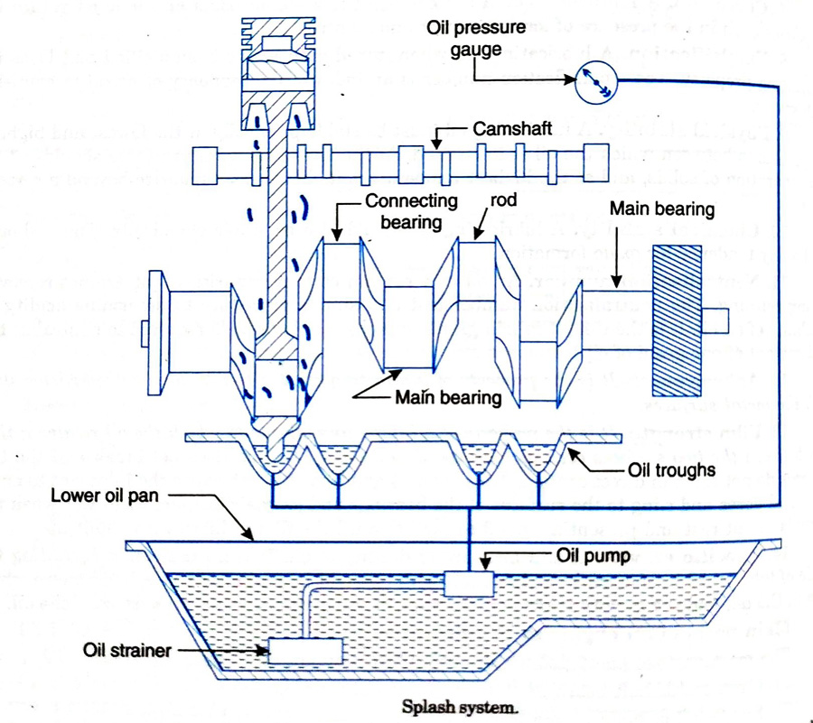
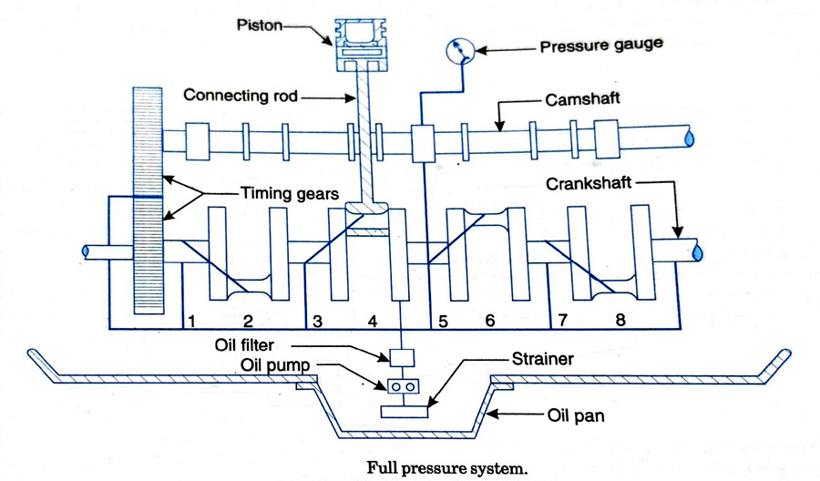
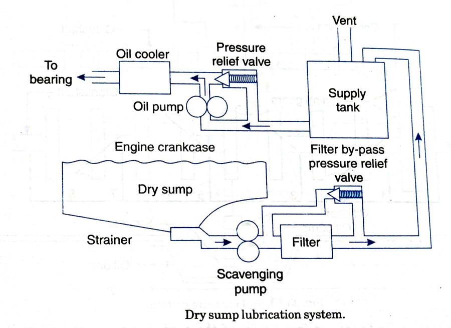

Internal Combustion Engines
Lubrication Systems
Lubrication is the admittance of oil between two surfaces having relative motion. The purpose of lubrication may be one or more of the following:
- Reduce friction and wear between the parts having relative motion
- Cool the surfaces by carrying away heat generated due to friction.
- Seal a space adjoining the surfaces such as piston rings and cylinder liner.
- Clean the surface by carrying away the carbon and metal particles caused by wear.
- Absorb shock between bearings and other parts and consequently reduce noise.
Properties of lubricants
The qualities to be considered in selecting oil for lubrication are:
- Viscosity: It is the ability of the oil to resist internal deformation due to mechanical stresses and hence it is a measure of the ability of the oil film to carry a load. A more viscous oil can carry a greater load, but it will offer greater friction to sliding movement of one bearing over other. Viscosity varies with temperature and hence if a surface to be lubricated is normally at high temperature it should be supplied with oil of a higher viscosity.
- Flash Point: It is defined as the lowest temperature at which the lubricating oil will flash when a small flame is passed across its surface. The flash point of the oil should be sufficiently high so as to avoid flashing of oil vapors at temperatures occurring inside engine.
- Fire Point: It is the lowest temperature at which the oil burns continuously. The fire point should also be high in a lubricating oil, so that oil does not burn in service.
- Cloud Point: When subjected to low temperatures the oil changes from liquid state to a plastic or solid state. In some cases the oil starts solidifying which makes it to appear cloudy. The temperature at which this takes place is called the cloud point.
- Pour Point: It is the lowest temperature at which the lubricating oil will pour. It is an indication of its ability to move at low temperatures. This property must be considered because of its effect on starting an engine in cold weather and on free circulation of oil through exterior feed pipes when pressure is not applied.
- Oiliness: This is the property which enables oil to spread over and adhere to the surface of the bearing. It is most important in boundary lubrication.
- Corrosion: A lubricant should not corrode the working parts and it must retain its properties even in the presence of foreign matter and additives.
- Emulsification: A lubricating oil, when mixed with water is emulsified and loses its lubricating property. The emulsification number is an index of the tendency of an oil to emulsify with water.
- Physical stability: A lubricating oil must be stable physically at the lowest and highest temperatures between which the oil is to be used. At the lowest temperature there should not be any separation of solids, and at the highest temperature it should not vaporize beyond a certain limit.
- Chemical Stability: A lubricating oil should also be stable chemically. There should not be any tendency for oxide formation.
- Neutralization number: It An oil may contain certain impurities that are not removed during refining. The neutralization number test is a simple procedure to determine acidity or alkalinity of an oil. It is the weight in milligrams of potassium hydroxide required to neutralize the acid content of one gram of oil.
- Adhesiveness: It is the property of lubricating oil due to which the oil particles stick with the metal surfaces.
- Film strength: It is the property of a lubricating oil due to which the oil retains a thin film between the two surfaces even at high speed and load. The film does not break and the two surfaces do not come in direct contact. Adhesiveness and film strength cause the lubricant to enter the metal pores and cling to the surfaces of the bearings and journals keeping them wet when the journals are at rest and presenting metal to contact until the film of lubricant is built up.
- Specific gravity: It is a measure of density of oil. It is an indication regarding the grade of lubricant by comparing one lubricant with other. It is determined by a hydrometer which flats in the oil, and the gravity is read on the scale of the hydrometer at the surface of the oil.
Main parts of an engine to be lubricated
- Main crankshaft bearings
- Big-end bearings
- Small-end or gudgeon pin bearins
- Piston rings and cylinder walls
- Timing gears
- Camshaft and camshaft bearings
- Valve mechanism
- Valve guides, valve tappets and rocker arms
Types of Lubrication systems
- Mist Lubrication system
-
Wet sump lubrication system
- Splash system
- Semi pressure system
- Full pressure system
- Dry sump lubrication system
Mist Lubrication System
This system is used for two-stroke cycle engines. Most of these engines are crank charged, i.e., they employ crankcase compression and thus are not suitable for crankcase lubrication. These engines are lubricated by adding 2 to 3 percent lubricating oil in the fuel tank. The oil and fuel mixture is induced through the carburettor. The gasoline is vaporized; and the oil in the form of mist, goes via crankcase into the cylinder. The oil which impinges on the crankcase walls lubricates the main and connecting rod bearings, and rest of the oil which passes on the cylinder during charging and scavenging periods, lubricates the piston, piston rings and the cylinder.
Wet Sump Lubrication System
These systems employ a large capacity oil sump at the base of crank chamber, from which the oil is drawn by a low-pressure oil pump and delivered to various parts. Oil there gradually returns back to the sump after serving the purpose.Splash system:
{kind=link}
This system is used on some small four-stroke stationary engines, in this system, the caps on the big end bearings of connecting rods are provided with scoops which, when the connecting rod is in the lowest position, just dip into oil troughs and thus direct the oil through holes in the caps to the big end bearings. Due to splash of oil, it reaches the lower portion of the cylinder walls, crankshaft and other parts requiring lubrication. Surplus oil eventually flows back to the oil sump. Oil level in the troughs is maintained by means of an oil pump which takes oil from sump, through a filter.
Splash system is suitable for low and medium speed engines having moderate bearing load pressures. For high performance engines, which normally operate at high bearing pressures and rubbing speeds this system does not serve the purpose.
Semi-pressure system:
This method is a combination of splash and pressure systems. It incorporates the advantages of both. In this system main supply of oil is located in the base of crank chamber. Oil is drawn from the lower portion of the sump through a filter and is delivered by means of a gear pump at pressure of about 1 bar to the main bearings. The big end bearings are lubricated by means of a spray through nozzles. Thus, oil also lubricates the cams, crankshaft bearings, cylinder walls and timing gears. An oil pressure gauge is provided to indicate satisfactory oil supply.
The system is less costly to install as compared to pressure system. It enables higher bearing loads and engine speeds to be employed as compared to splash system.
Full pressure system:
{kind=link}
In this system, oil from oil sump is pumped under pressure to the various parts requiring lubrication. The oil is drawn from the sump through filter and pumped by means of a gear pump. Oil is delivered by the pressure pump at pressure ranging from 1.5 to 4 bar. The oil under pressure is supplied to main bearings of crankshaft and camshaft. Holes drilled through the main crankshafts bearing journals, communicate oil to the big end bearings and also small end bearings through hole drilled in connecting rods. A pressure gauge is provided to confirm the circulation of oil to the various parts. A pressure regulating valve is also provided on the delivery side of this pump to prevent excessive pressure.
This system finds favor from most of the engine manufacturers as it allows high bearing pressure and rubbing speeds.
Dry Sump Lubrication System
{kind=link}
In this system, the oil from the sump is carried to a separate storage tank outside the engine cylinder block. The oil from sump is pumped by means of a sump pump through filters to the storage tank. Oil from storage tank is pumped to the engine cylinder through oil cooler. Oil pressure may vary from 3 to 8 bar. Dry sump lubrication system is generally adopted for high-capacity engines.